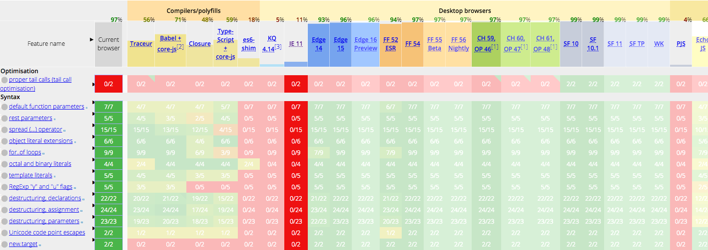

从 React 到 Reason

如果你是一个 React 爱好者，开始在各种站点听到有人谈论 Reason 这个新语言，也看见 Jordan（React 作者）说 ReasonReact 将是未来，但你却是不知道从哪下手，那么这篇小教程就是为你准备的。
ps. 有条件的话还是尽量看 Reason 和 ReasonReact 的官方文档吧
pps. Jared 写的 A ReasonReact Tutorial 是 ReasonReact 最棒的入门指南。本文也是经由他允许，参考了很多其中的内容。能看的懂英语的都直接去他那里吧~
Reason 是什么？
Reason 是一门基于 OCaml 的语言，它为 Ocaml 带来了新的语法和工具链。它既可以通过 BuckleScript 被同编译为 JavaScript，也支持直接编译为原生的二进制汇编。Reason 提供了和 JavaScript 相似的语法，也可以使用 npm 来安装依赖。长江后浪推前浪，Reason 丢掉了历史包袱，比 JavaScript 多了可靠的静态类型，也更快更简洁！
为什么要学 Reason ？
“为啥我要花时间学一门全新的语言呢？是 JavaScript 哪里不好还是你们要求太高？”
错！Reason 不是一门全新的语言，事实上 80% 的语义都可以直接对应到现代的 JavaScript 上，反之也差不多。你只需要丢弃掉一丢丢的 JavaScript 边角语法，再学一点点好东西，就可以获得也许 ES2030 才有的特性。对于大部分人来说，学习 Reason 也不会比学习 JavaScript 和一个其他的类型系统（比如 Flow）来的慢。
不相信的话，先自己去看看 JS -> Reason 速查表，然后去 playground 体验一下吧。
从哪开始？
如果你体验了一下，还是提不起兴趣，你可以再出门右转逛逛隔壁家 elm 和 ClojureScript 试试。但如果你觉得 ok，却不知道从哪下手，那不妨和我一样，从咱们熟悉的 React 开始。Jordan 重新发起了 ReasonReact 这个新项目，让我们可以换一种更简单优雅的方式写 React。
ReasonReact
ReasonReact 提供了一些和 React 脚手架类似的工具，比如 reason-scripts。不过为了理解的深入一点，不妨从零开始搭起我们的第一个 ReasonReact 项目。新建一个项目目录，名字随意，让我们开始吧~ 当然，你也可以直接 clone 已经准备好了的 simple-reason-react-demo 项目来参考。
首先，初始化 package.json
{
"name": "simple-reason-react-demo",
"version": "0.1.0",
"scripts": {
"start": "bsb -make-world -w",
"build": "webpack -w"
},
"dependencies": {
"react": "^16.2.0",
"react-dom": "^16.2.0",
"reason-react": "^0.3.0"
},
"devDependencies": {
"bs-platform": "^2.1.0",
"webpack": "^3.10.0"
}
}
然后安装一下依赖：
npm install --registry=https://registry.npm.taobao.org
项目里安装了最新的 React 和 ReactDOM，以及额外的 ReasonReact。而编译工具使用了前端业界标准 Webpack 和 张宏波 开发的 bs-platform。你可能暂时还弄不清 BuckleScript 在这里将要扮演怎样的角色，不过没关系，暂时你只要把他理解成 Reason -> JavaScript 的编译器就好了，就像 Babel 把 ES2016 编译成了 ES5 一样。
然后，我们添加一个 BuckleScript 的配置文件 bsconfig.json
{
"name" : "simple-reason-react-demo",
"reason" : {"react-jsx" : 2},
"refmt": 3,
"bs-dependencies": ["reason-react"],
"sources": "src"
}
可以大概猜出来，项目用到了 reason 的 react-jsx 语法，依赖了 reason-react，源代码存放在 src 目录。时间有限，就先不展开研究了，详细配置可以查看 bsconfig.json 结构。再创建下 src 目录，我们的项目应该长成这样了
.
├── bsconfig.json
├── src
├── node_modules
└── package.json
你好，ReasonReact
是不是很容易的就到这里了，让我们正式开始写 Reason 吧！在 src 里新建 Main.re 文件，写下 Hello World
ReactDOMRe.renderToElementWithId(
<div>(ReasonReact.stringToElement("Hello ReasonReact"))</div>,
"root"
);
几乎和 React 代码一样不是么？然后我们运行编译命令
# 相当于之前写好的 'bsb -make-world -w'
npm start
一切正常的话，可以看到编译成功的提示，否则就要辛苦你按错误提示排查一下了，注意 bsb 的输出对我们的很重要，一些错误提示和类型检查的信息都要通过它来看。因为我们开启了 -w 的 watch 模式，接下来还要用到，就先不用退出了。bsb 将代码编译到了 lib 目录下
lib
├── bs
└── js
└── src
└── Main.js
目前我们要关注一下的是 lib/js/src/Main.js，打开它我们可以看到编译好的 JavaScript 代码，非常漂亮是吧？这都是 BuckleScript 的功劳。为了让代码能在浏览器里运行，我们还需要用 Webpack 打包一下模块化，这些你都应该非常熟悉了。
创建 public/index.html
<!doctype html>
<meta charset=utf8>
<title>你好</title>
<body>
<div id="root"></div>
<script src="./bundle.js"></script>
以及 webpack.config.js
const path = require('path');
module.exports = {
entry: './lib/js/src/Main.js',
output: {
path: path.join(__dirname, "public"),
filename: 'bundle.js',
},
};
Webpacck 配置里入口是 bsb 编译生成的 './lib/js/src/Main.js'。再打开一个终端运行 npm run build，我们的准备工作就全部就绪了。我们只利用 webpack 做很简单的打包，所以你基本可以忽略这个终端的输出，还是把精力放在刚刚的 start 命令上。接下来直接在浏览器里打开 index.html 文件，就可以看到 “Hello ReasonReact” 了~
第一个组件

让我们开始第一个组件的开发，一个只能加加减减的步进器。新建一个组件文件：src/Stepper.re
let component = ReasonReact.statelessComponent("Stepper");
let make = (children) => ({
...component,
render: (self) =>
<div>
<div>(ReasonReact.stringToElement("I'm a Stepper! "))</div>
</div>
});
ReasonReact.statelessComponent 会返回一个默认的组件定义，里面包含了你熟悉的那些生命周期函数以及其他一些方法和属性。这里我们定义了 make 方法，目前它只接受一个 children 参数，返回了一个组件。我们利用了类似 es6 的 ... 对象展开操作符 重写了 component 中的 render 方法。神奇的是这段代码居然完全符合 JavaScript 的语法...接下来，让我们再修改一下 Main.re，让他渲染这个 Stepper 组件
ReactDOMRe.renderToElementWithId(<Stepper />, "root");
刷新下浏览器，你应该可以看到刚写好的组件就这么成功的 render 出来了。
你可能很好奇为什么这里没有写 require() 或 import。这是因为 Reason 的跨文件依赖是自动从你的代码中推导出来的，当编译器看到 Stepper 这个在 Main.re 中并没有定义的量，它就会自动去找 Stepper.re 这个文件并引入该模块。
熟悉 ReactJS 的同学都应该知道，jsx 并不是什么特殊的语法，只是会被编译成普通的函数调用，比如
<div>Hello React</div>
// to
React.createElement(
"div",
null,
"Hello React"
);
而在 ReasonReact 中，jsx 会被翻译成
<Stepper />
/* to */
Stepper.make([||]) /* [|1,2,3|] 是 Reason 中数组的语法 */
意思是调用 Stepper 模块的 make 函数，参数是一个空的数组。这就和我们之前写好的 Stepper.re 中的 make 函数对应上了，这个空数组就对应于 make 的参数 children。再让我们看眼我们的第一个组件
let component = ReasonReact.statelessComponent("Stepper");
let make = (children) => ({
...component,
render: (self) =>
<div>
<div>(ReasonReact.stringToElement("I'm a Stepper! "))</div>
</div>
});
不同于 ReactJS 中组件的 render，这里的 render 方法需要一个参数：self，暂且你可以把它比作 this，因为我们的 Stepper 是一个 stateless 组件，所以我们还用不到它。render 方法里返回的同样是虚拟 DOM 节点，不同的是节点必须符合 ReasonReact 要求的节点类型。我们不能再直接写 <div>Hello</div>，而得使用 ReasonReact 提供的 stringToElement 包装一层。嫌函数名太长？先忍着吧...
加上 state
思来想去，我们的步进器还需要一个状态，就是要显示的数字。在 Reason 中，我们需要先定义 state 的类型（type）
type state = {
value: int
};
如果你写过 flow 或者 typescript，一定不会觉得奇怪，这标识我们的 state 中包含 int 类型的 value 字段。然后，我们需要开始把原先的 statelessComponent 替换成 reducerComponent，原先的组件代码也需要略微改动一下
type state = {
value: int
};
let component = ReasonReact.reducerComponent("Stepper");
let make = (children) => ({
...component,
initialState: () => {
value: 0
},
reducer: ((), state) => ReasonReact.NoUpdate,
render: (self) =>
<div>
<div>(ReasonReact.stringToElement(string_of_int(self.state.value)))</div>
</div>
});
聪明的你肯定一下就看懂了 initialState 和 ReactJS 的 getInitialState 简直一模一样。而在 render 这里也很类似，组件当前的状态可以通过 self.state 获取，还是为了类型匹配我们套了一层 string_of_int 将 int 类型的 value 转换成 string。而新增的 reducer 函数可能就有点看不懂了。有意思的地方来啦~
在 ReactJS 中，我们依靠 setState 去手动的更新 state。ReasonReact 里则引入了 “reducer” 的概念，看上去很像 Redux 对吧？也许是 Jordan 自己也不是很喜欢 setState 这个非函数式的操作吧 …… ReasonReact 里更新一个组件状态分为两个步骤，首先发起一个 action，然后在 reducer 中处理它并更新状态。此时此刻，我们还没有添加 action，所以 reducer 还是无操作的，我们直接返回了一个 ReasonReact.NoUpdate 来标识我们并没有触发更新。让我们继续加上 action
type state = {
value: int
};
/* here */
type action =
| Increase
| Decrease;
let component = ReasonReact.reducerComponent("Stepper");
let make = (children) => ({
...component,
initialState: () => {
value: 0
},
reducer: (action, state) => {
/* here */
switch action {
| Decrease => ReasonReact.Update({value: state.value - 1})
| Increase => ReasonReact.Update({value: state.value + 1})
};
},
render: (self) =>
<div>
/* and here */
<button onClick={self.reduce((evt) => Decrease)}>(ReasonReact.stringToElement("-"))</button>
<div>(ReasonReact.stringToElement(string_of_int(self.state.value)))</div>
<button onClick={self.reduce((evt) => Increase)}>(ReasonReact.stringToElement("+"))</button>
</div>
});
首先，我们定义了 action 类型，它是一个 Variant（变体）。在 JavaScript 的世界里我们没见过这种值，它用来表示这个变体（或者先叫它 "枚举"？）可能的值。就像在 Redux 中推荐先声明一堆 actionType 一样，这个例子里我们定义了 +（Increase） 和 -（Decrease） 两种 action。
然后我们就可以给 button 增加点击的回调函数。我们使用了 self.reduce 这个函数（还记得 dispatch 么），它接收一个函数 (evt) => Increase 做转换，可以把它看作将点击的 event（在这里我们忽略掉了它因为用不到它...）换成一个 action，而这个 action 会被 self.reduce 用于做一个副作用操作来更新 state，更新 state 的操作就在 reducer 中。
reducer 内采用了模式匹配的形式，定义了对于所有可能的 action 需要如何更新 state。例如，对于 Increase 这个类型的 action，返回了 ReasonReact.Update({value: self.state.value + 1}) 去触发更新。值得注意的是，组件的 state 是不可变的，而目前 state 中只有 value 一个字段，所以我们没有 {...state, value: state.value + 1} 这样去展开它。
如果你熟悉 Redux 的话，应该非常熟悉这一套范式了（虽然这其实来源于 Elm）。不同的是，我们直接拥有不可变的数据，不再需要过度的使用 JavaScript 的 String 来做 actionType，reducer 也写的更加优雅简单了，看着真是舒服~
继续？
这篇文章到这里也就暂时结束了，距离能做出一般的组件功能我们还差了很多东西。目前我也只是在一些个人的小项目中使用 Reason，文章内容很浅，主要是希望能启发下厉害的你去尝试 Reason 这个还算新鲜的语言，相信它会让你眼前一亮的。
对了，既然都看到这里了，不如再去看看今年两次 React Conf 上 chenglou 关于 Reason 的精彩演讲吧~
21 分钟精通前端 Polyfill 方案

今天是 2017 年 7 月 7 日，es2015 正式发布已经两年了。但最新的浏览器们逼近 100% 的支持率对我们好像并没有什么卵用，为了少数用户的体验，我们很可能需要兼容 IE9。感谢 babel 的编译，让我们完美的提前使用上了 const，let 和 arrow function。可也许你还是面对着不敢直接使用 fetch 或是 Object.assign 的难题？
babel 和 polyfill
刚接触 babel 的同学一开始可能都认为在使用了 babel 后就可以无痛的使用 es2015 了，之后被各种 undefined 的报错无情打脸。一句话概括, babel 的编译不会做 polyfill。那么 polyfill 是指什么呢?
const foo = (a, b) => {
return Object.assign(a, b);
};
当我们写出上面这样的代码，交给 babel 编译时，我们得到了：
"use strict";
var foo = function foo(a, b) {
return Object.assign(a, b);
};
arrow function 被编译成了普通的函数，但仔细一看 Object.assign 还牢牢的站在那里，而它作为 es2015 的新方法，并不能运行在相当多的浏览器上。为什么不把 Object.assign 编译成 (Object.assign||function() { /*...*/}) 这样的替代方法呢？好问题！编译为了保证正确的语义，只能转换语法而不是去增加或修改原有的属性和方法。所以 babel 不处理 Object.assign 反倒是最正确的做法。而处理这些方法的方案则被称为 polyfill。
babel-plugin-transform-xxx
解决这个问题最原始的思路是缺什么补什么，babel 提供了一系列 transform 的插件来解决这个问题，例如针对 Object.assign，我们可以使用 babel-plugin-transform-object-assign：
yarn add babel-plugin-transform-object-assign
# in .babelrc
{
"presets": ["latest"],
"plugins": ["transform-object-assign"]
}
方便你尝试，这里准备了一些测试的代码。编译之前的代码，我们得到了：
var _extends = Object.assign || function (target) { for (var i = 1; i < arguments.length; i++) { var source = arguments[i]; for (var key in source) { if (Object.prototype.hasOwnProperty.call(source, key)) { target[key] = source[key]; } } } return target; };
var foo = exports.foo = function foo(a, b) {
return _extends(a, b);
};
babel-plugin-transform-object-assign 在 module 之前替换了我们用到的 Object.assign 方法。看上去效果不错，但细细考究一下会发现这样的问题：
// another.js
export const bar = (a, b) => Object.assign(a, b);
// index.js
import { bar } from './another';
export const foo = (a, b) => Object.assign(a, b);
被编译成了：
/***/ 211:
/***/ (function(module, exports, __webpack_require__) {
"use strict";
Object.defineProperty(exports, "__esModule", {
value: true
});
exports.foo = undefined;
var _extends = Object.assign || function (target) { for (var i = 1; i < arguments.length; i++) { var source = arguments[i]; for (var key in source) { if (Object.prototype.hasOwnProperty.call(source, key)) { target[key] = source[key]; } } } return target; };
var _another = __webpack_require__(212);
var foo = exports.foo = function foo(a, b) {
return _extends(a, b);
};
/***/ }),
/***/ 212:
/***/ (function(module, exports, __webpack_require__) {
"use strict";
Object.defineProperty(exports, "__esModule", {
value: true
});
var _extends = Object.assign || function (target) { for (var i = 1; i < arguments.length; i++) { var source = arguments[i]; for (var key in source) { if (Object.prototype.hasOwnProperty.call(source, key)) { target[key] = source[key]; } } } return target; };
var bar = exports.bar = function bar(a, b) {
return _extends(a, b);
};
/***/ })
transform 的引用是 module 级别的，这意味着在多个 module 使用时会带来重复的引用，这在多文件的项目里可能带来灾难。另外，你可能也并不想一个个的去添加自己要用的 plugin，如果能自动引入该多好。
babel-runtime & babel-plugin-transform-runtime
前面提到问题主要在于方法的引入方式是内联的，直接插入了一行代码从而无法优化。鉴于这样的考虑，babel 提供了 babel-plugin-transform-runtime，从一个统一的地方 core-js 自动引入对应的方法。
安装和使用的方法同样不复杂：
yarn add -D babel-plugin-transform-runtime
yarn add babel-runtime
# .babelrc
{
"presets": ["latest"],
"plugins": ["transform-runtime"]
}
首先需要安装开发时的依赖 babel-plugin-transform-runtime。同时还需要安装生产环境的依赖 babel-runtime。是否要在生产环境也依赖它取决于你发布代码的方式，简单点直接放在 dependency 里总没错。一切就绪，编译时它会自动引入你用到的方法。但自动就意味着不一定精确：
export const foo = (a, b) => Object.assign(a, b);
export const bar = (a, b) => {
const o = Object;
const c = [1, 2, 3].includes(3);
return c && o.assign(a, b);
};
会编译成：
var _assign = __webpack_require__(214);
var _assign2 = _interopRequireDefault(_assign);
function _interopRequireDefault(obj) { return obj && obj.__esModule ? obj : { default: obj }; }
var foo = exports.foo = function foo(a, b) {
return (0, _assign2.default)(a, b);
};
var bar = exports.bar = function bar(a, b) {
var o = Object;
var c = [1, 2, 3].includes(3);
return c && o.assign(a, b);
};
foo 中的 assign 会被替换成 require 来的方法，而 bar 中这样非直接调用的方式则无能为力了。同时，因为 babel-plugin-transform-runtime 依然不是全局生效的，因此实例化的对象方法则不能被 polyfill，比如 [1,2,3].includes 这样依赖于全局 Array.prototype.includes 的调用依然无法使用。
babel-polyfill
上面两种 polyfill 方案共有的缺陷在于作用域。因此 babel 直接提供了通过改变全局来兼容 es2015 所有方法的 babel-polyfill，安装 babel-polyfill 后你只需要在所有代码的最前面加一句 import 'babel-polyfill' 便可引入它，如果使用了 webpack 也可以直接在 entry 中添加 babel-polyfill 的入口。
import 'babel-polyfill';
export const foo = (a, b) => Object.assign(a, b);
加入 babel-polyfill 后，打包好的 pollyfill.js 一下子增加到了 251kb（未压缩），（建议感兴趣的同学把代码拉下来运行一下，之后提到的所有方式也都可以看到打包结果）搜索一下 polyfill.js 不难找到这样的全局修改：
//polyfill
`$export($export.S + $export.F, 'Object', {assign: __webpack_require__(79)});
babel-polyfill 在项目代码前插入所有的 polyfill 代码，为你的程序打造一个完美的 es2015 运行环境。babel 建议在网页应用程序里使用 babel-polyfill，只要不在意它略有点大的体积（min 后 86kb），直接用它肯定是最稳妥的。值得注意的是，因为 babel-polyfill 带来的改变是全局的，所以无需多次引用，也有可能因此产生冲突，所以最好还是把它抽成一个 common module，放在项目 的 vendor 里，或者干脆直接抽成一个文件放在 cdn 上。
如果你是在开发一个库或者框架，那么 babel-polyfill 的体积就有点大了，尤其是在你实际使用的只有一个 Object.assign 的情况下。更可怕的是对于一个库来说，改变全局环境是使不得的。谁也不希望使用了你的库，还附带了一家老小的 polyfill 改变了全局对象。这时不污染全局环境的 babel-plugin-transform-runtime 才是最合适的。
babel-preset-env
回到应用开发。通过自动识别代码引入 polyfill 来优化看来是不太靠谱的，那是不是就无从优化了呢？并不是。还记得 babel 推荐使用的 babel-preset-env 么？它可以根据指定目标环境判断需要做哪些编译。而在张克炎大神的建议下，babel-preset-env 也支持针对指定目标环境选择需要的 polyfill 了，只需引入 babel-polyfill，并在 babelrc 中声明 useBuiltIns，babel 会将引入的 babel-polyfill 自动替换为所需的 polyfill。
# .babelrc
{
"presets": [
["env", {
"targets": {
"browsers": ["IE >= 9"]
},
"useBuiltIns": true
}]
]
}
对比 "IE >= 9" 和 "chrome >= 59" 环境下编译后的文件大小:
Asset Size Chunks
polyfill.js 252 kB 0 [emitted] [big]
ie9.js 189 kB 1 [emitted]
chrome.js 30.5 kB 2 [emitted]
transform-runtime.js 17.3 kB 3 [emitted]
transform-plugins.js 3.48 kB 4 [emitted]
在目前 IE9 的需求下能节省到将近 30%，但想不到浏览器之神 chrome 也还需要 30kb 的 polyfill，可能是为了修正那些 v8 的一些细小的规范问题吧。（当我尝试调大浏览器范围时，发现始终停留在 189kb 以内，还没细究相比完整的 polyfill 少掉了什么，如果有高手知道的欢迎解答）
polyfill.io
以上这样对你来说应该已经够用了，但本质上还是让那些愿意使用最新浏览器的优质用户们做了牺牲。聪明的你可能已经想到了一种优化方案，针对浏览器来选择 polyfill。没错！polyfill.io 便是基于这个思路给出的一项服务。
你可以尝试在不同的浏览器下请求 https://cdn.polyfill.io/v2/polyfill.js 这个文件，服务器会判断浏览器 UA 返回不同的 polyfill 文件，你所要做的仅仅是在页面上引入这个文件，polyfill 这件事就自动以最优雅的方式解决了。更加让人喜悦的是，polyfill.io 不旦提供了 cdn 的服务，也开源了自己的实现方案 polyfill-service。简单配置一下，便可拥有自己的 polyfill service 了。
看上去一切都很美好，但在使用之前还请你多考虑一下。polyfill.io 面对国内奇葩的浏览器环境能不能把 UA 算准，如果缺失了 polyfill 还有没有什么补救方案，也许都是你需要考虑的。但无论如何，这是个优秀的想法和方案，我想未来也会有更多的网站采用 polyfill.io 的思路的。比如 theguardian 和 redux 作者 Dan 在 create-react-app 上的提议（虽然没被接受哈~）。
Copyright © 2015 Powered by MWeb, Theme used GitHub CSS.